City Parking mobile APP
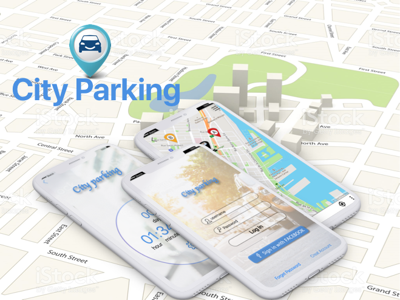1.Context
1.1 Introduction
City parking is a mobile APP dedicate to solve parking problem in the city, it brings a lot of convenience to the driver, like car location info, parking lot info, snow removal notice.
1.2 Ideation
The idea was generated in a winter night when I came back home, I saw some vehicle towed before snow removal action, I thought the owner of vehicle should be informed by some system, like telephone, SMS or notification on the phone to avoid tickets, then I do research on the internet to look for a solution, but I am not finding any solution for this.
I also notice the parking in the city is a big popular pain for any driver when I do research on the internet, I ask myself whether I can find a solution for this, the answer is "I want to try". The first important thing is where I can get public parking information, snow removal information etc., I checked the website of government, I found a lot of city have open data service, I can access parking information, towed vehicle info etc. in database, then I try to validate idea in one mobile app Meetup of Montreal, I got a lot of useful response in that meetup.
1.3 Most common responses from meetup:
- Hard to find on street parking in unfamiliar areas(public free parking or public paid parking)
- Tracking vehicle if it be towed or forget parking location
- Tracking the time left for parking
What's time is it for snow removal?
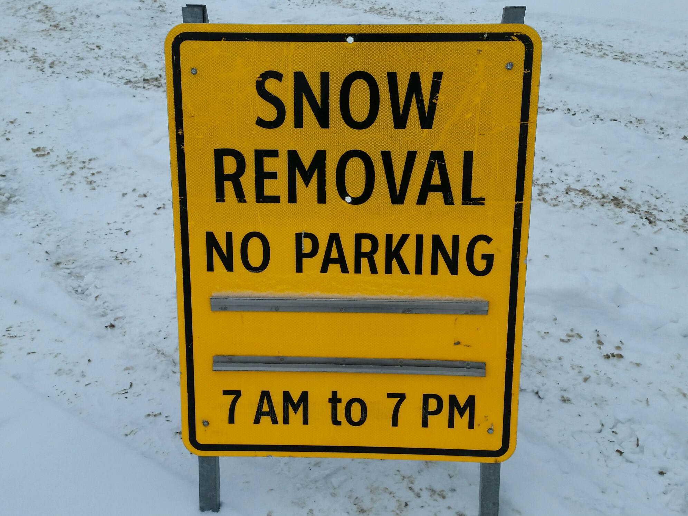Whether can I park here?
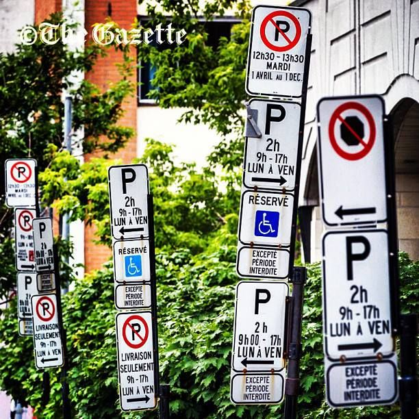2. Roles and responsibilities
- My role: UX design, UI design
- Tools: Sketch, Axure,paper and pen
- Date: 07 2014
- Timeline: 4 weeks
- Deliverables: High-fidelity prototype, interactive prototype
- Team: Passion project
3. Users and audience
The driver who wan to use public parking lot.
4. Project Constraints
- All the system data depend on open data from local government
- All the real time data depend on service of government
- Location base service depend on user's cell phone, it will produce deviation by different model cellphone.
- This is a passion project, I can not work it on full time, no budget for this, I have to do all user research by myself in spare time
5. Research
5.1 Product Audit
Before brainstorming solutions, I wanted to explore the product to understand it deeper and see if there were other UI/UX issues. Later, I’ll mention some issues that I discovered in the “Define” section.
5.2 Competitive Analysis
I started by looking at other app which can provide parking info for driver in montreal which used open API provided by city government on mobile to identify what seemed to work and what did not.
During this research I noticed no APPs can provide function following :
- Search parking lot: Help driver to find parking lot in daily life.
- Provide timer for parking except public paid parking: provide detail timer function for public free parking or paid parking, like when the city conducts its street maintenance,cleans the roads and snow removal, you have to move your vehicle.
- Provide detailed information for car location: provide car detail information of location, like car towed by some towed service provider, especially in snow removal period.
5.3 Define
5.3.1 Pain points
6. Design & Concept
6.1 Design Goal
Provide stress and ticket free solution to user(parking finder, vehicle locator, parking timer).
6.2 UI design principles
Use design principles such as proximity and white space to create a more simple interface.
6.3 Sitemap
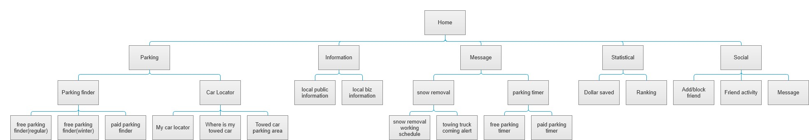6.4 Function diagram
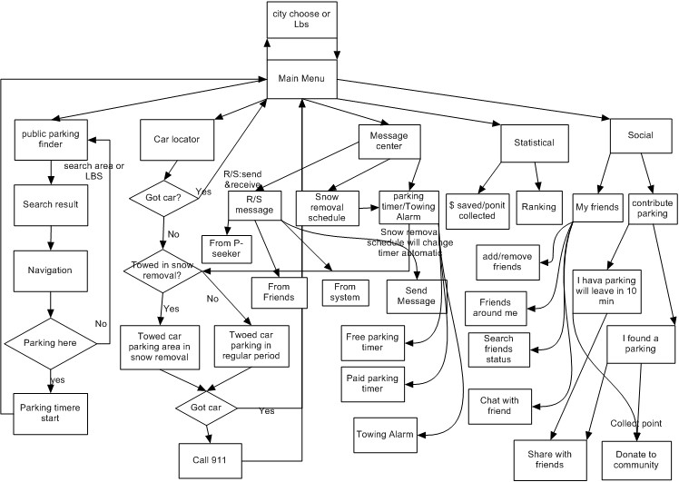6.5 First Wireframe
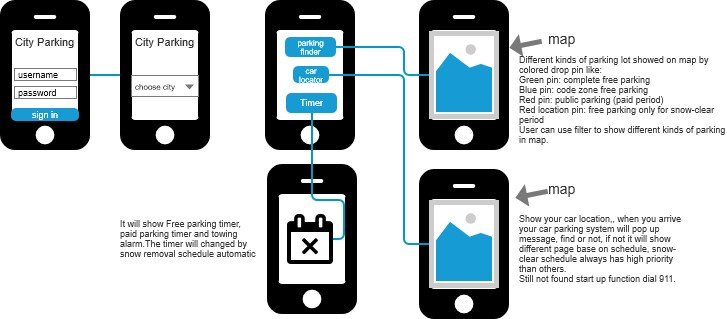6.6 Interaction Design
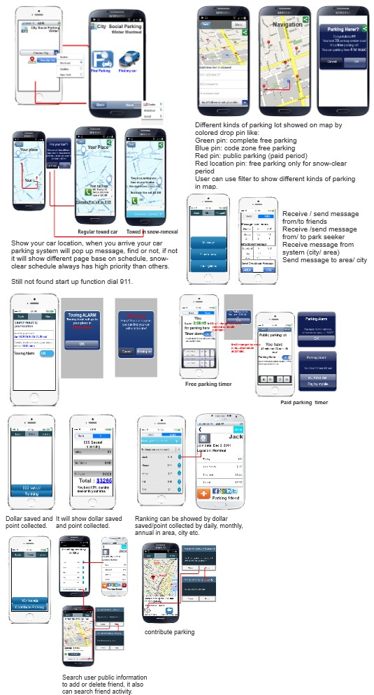7. Feedback & Iterations
7.1 Presenting my work to the members of mobile dev meetup
As our schedule, we will meet together once a week to discus our project. I would present my design concepts and receive design critiques from others
7.2 Lesson Learned
When presenting design work, come into meetings ready to learn with an open mind. Confidently present your designs, but humbly take feedback. Oftentimes there a new perspectives and considerations that others will share with you.
Here is some of the feedback I received from the team:
Concentrate core issues: The core problem of clients is parking(where and how long).
UI issues
- No unified design language
- Not adopt consistency rule
8. Revisiting the issues
8.1 Remove unnecessary function
Before
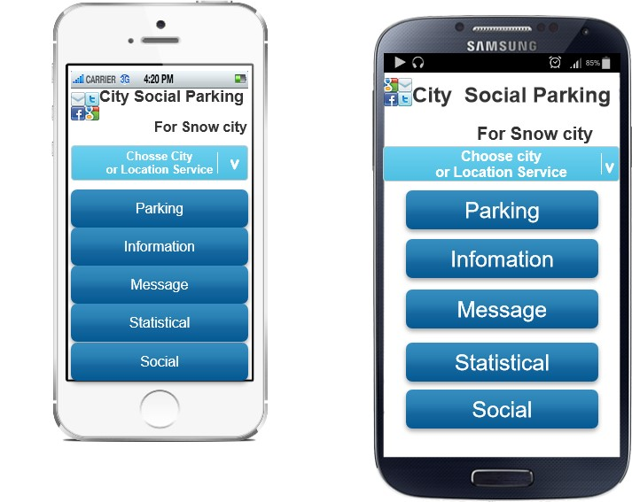After
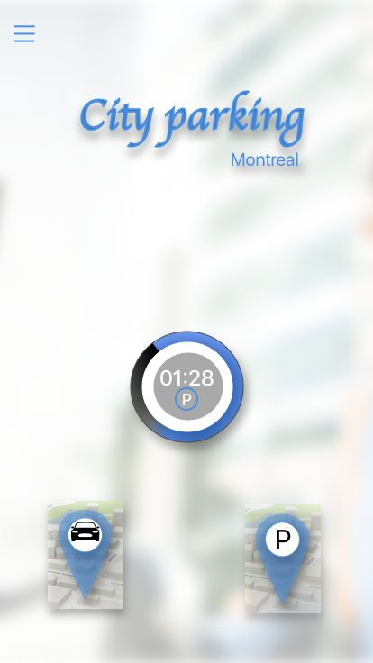Color: only use blue as the primary color
All the pages use the same style, minimalist style.
Before
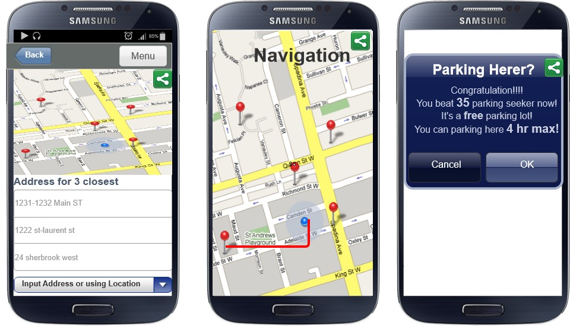After
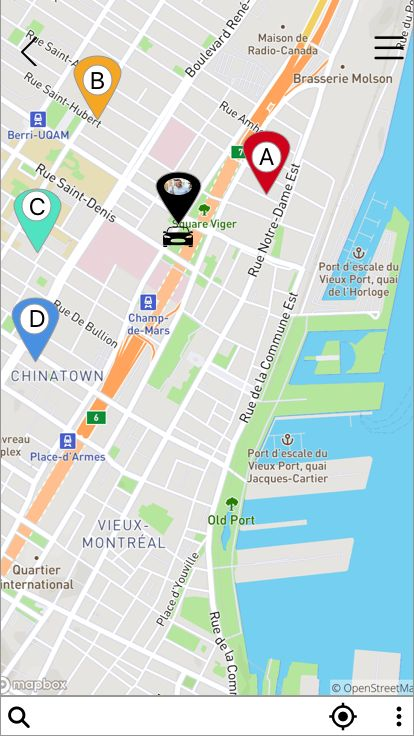9. Final design
9.1 Part of UI design
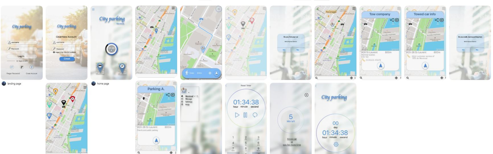9.2 Interactive presentaion
There are three main functions in this APP, parking timer, parking locator, and car locator. After user signed-in user can access all the functions and also can modify the profile.
Users can set the timer manually, the timer will be adjusted automatically by the system based on information issued by the government like snow removal, street cleaning, rush hour regulation, etc.
After choosing the vehicle locator, the system will provide the most recently recorded car location on the map and guide the user to the parking location. If the user can't find the car at the location, the system will provide two possible locations to get back the car, If towing by the private company the system will provide company info and regular cost, if towing by city government the system will provide information of parking location, the estimated amount of fine, and the contact phone number.
After choosing the parking locator, the system will provide the most closely parking location on the map and guide the user to the parking location, the user sorting result by filter like public free parking, public free parking with code, public paid parking, and private parking. After chose the parking, the system will guide the user parking in the location, after the user confirmed the parking location, the system will record the location and start the timer automatically.
10. Retrospective
10.1 What I'd do differently?
Looking back on this project, I would have:
- Concentrate on the core problem of clients,don’t add unnecessary function as your imagine which not validated by client
- Taken more initiative to ensure research was happening throughout the project.
- Questioned the problems that the client presented to us so that I know they are really problems that need to be solved.
10.2 Outcome
After I finished design this project, I achieve the goal what I set at the begining, but I can not find any partner or team to make this design reality, for technical issues or finance issues I can not confirm, I have to collect all the document and put it in my backup harddrive.
10.3 Lesson learned:
During this project, I learned: